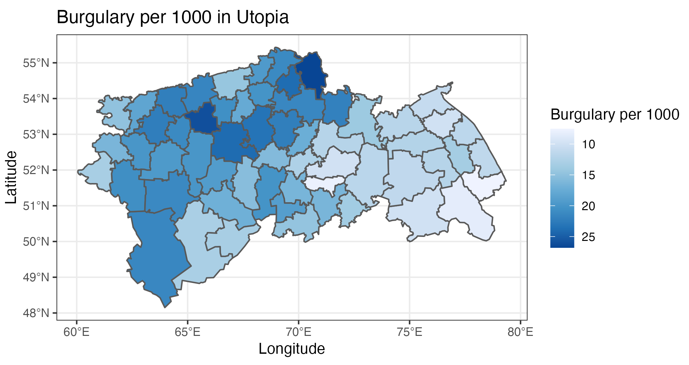
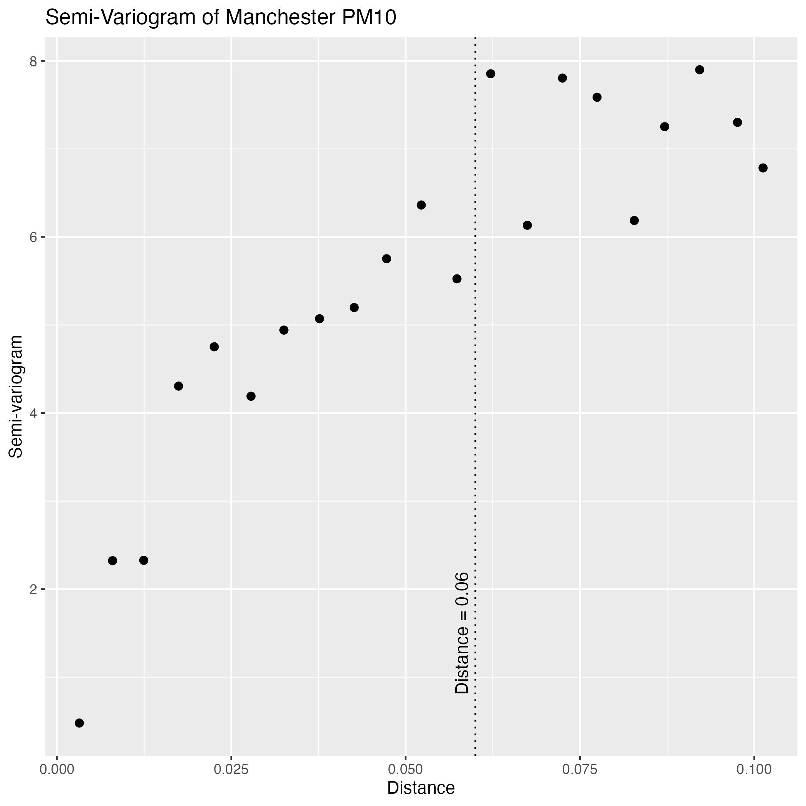
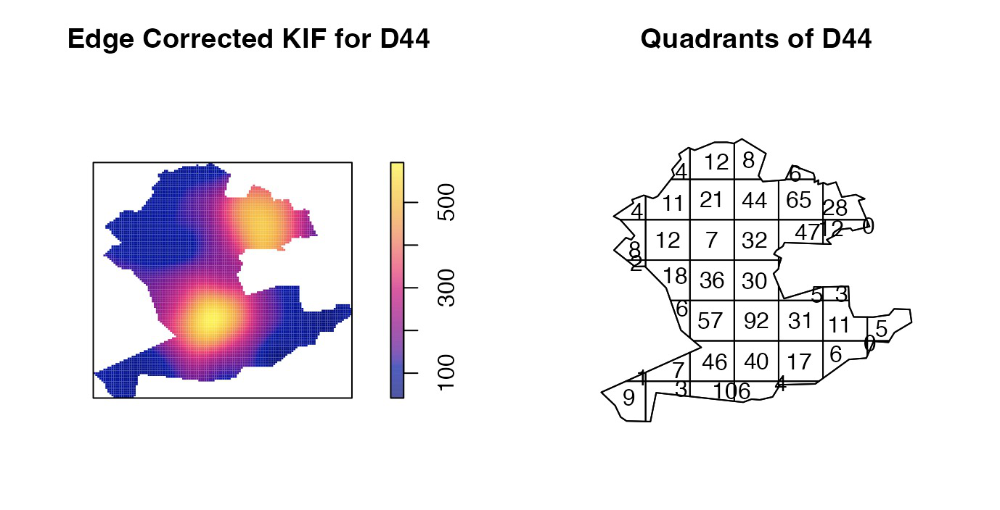
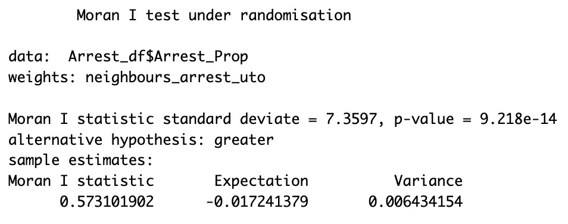

Spatial Data in R
R and RStudio are both incredible powerful tools for analysis of large datasets. As a visualisation analyst, I am interested in how I can use the features in R, along with ggplot2 to produce stunning graphics. This page will talk about some of those visualisations and the importance of them in spatial data analysis. Plots and visualisations shown are all part of my Data Science module taken in my final year at the University of Bath.
Shapefiles and Basic Maps
Spatial Data analysis regards relationships between data points in physical space, the majority of the time, these data points relate to real-world locations and thus we can gain insight by mapping the points. We can use ggplot2 to quickly and easily map shapefiles, which encode the boundaries of locations in geometries. Below is a fictional map displaying burglary rates. The code to generate a simple map is shown below.

ggplot(data=Arrest_df) + geom_sf(aes(fill=Arrest_Prop))
Mapping with shapefiles can be a useful way to conduct exploratory analysis, however other plots are more useful for drawing conclusions about spatial dependence of data.
The Semi-Variogram
The semi-variogram is a type of plot that can be produced in R to analyse the correlation between pairwise distance of points and their spatial relation. Small values of the semi-variogram can be interpreted as points having high spatial dependence. The cutoff distance shown of 0.06 is where the semi-variogram begins to plateau, thus points beyond this distance are independent.
The mock data used is PM10 measurements in Manchester, we can see that spatial dependence decreases as distance increases. At small distances, the semi-variogram is small, implying strong spatial dependence. We assume isotropy when estimating the semi-variogram, i.e. that the dependence between two locations is fully determined by their distance, this may be reasonable here, as PM10 is a gaseous measure.
Kernel Intensity Plots and Quadrants
Kernel Intensity Plots and Quadrants are ways that we can analyse point pattern data, i.e. when our data points do not occur at a known location. The mock data used is locations of the occurance of fictional crimes. These two types of plot allow us to make judgements on whether the events occur uniformly over an area, or non-uniformly. They help us identify 'hot-spots' and 'cold-spots' across our location of interest.
We can see from the Kernel Intensity plot above that there are 2 hot spots for crimes, hence the locations seem non homogeneous. These hot-spots are located in the North-East of the district, and the centre of the district. In this fictional scenario the police department should focus their efforts in these locations in order to encounter the highest prevalence of crimes. Of the two, the hot spot in the centre of the district is more intense, consequently, this would be my first recommendation for police deployment, with the hot-spot in the North-East being my second recommendation.
Moran's I and Spatial Dependence
Moran's I statistic is a measure that we can use to judge the spatial dependence between lattice data, i.e. data that has been aggregated to county or distict level, often for privacy reasons. Looking back at the burglary plot above, we may want to judge whether districts near one another are correlated. We can use R to run this test for us:
neighbours_arrest_uto <- nb2listw(poly2nb(Arrest_df), style="B")

Observing the p-value of 9.22e-14 we have a statistically significant relationship between location and burglary rate. Rather than testing the whole map, we may want to investigate just one area comparing to it's neighbours. We can use the Local Moran Statistic for this, below is the R output for the fictional District 31:
## [1] "Local Moran: District 31" "23.038"§
23.038 is deemed as a reasonably high value for Local Moran, so we can conclude that District 31 has a high level of local spatial dependence between it's neighbours and burglary rates.
Final words
Spatial Data analysis is one of the most important areas of data analysis to learn about, real world data often has a location attribute attached to it. Knowing how to utilise and extract conclusions in this way will be invaluable to me throughout my analytics career.